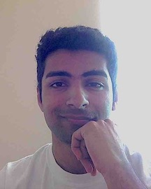

<div class="container">

    <div class="row">
        <div class="col-md-4 ml-auto">
            
        </div>

        <div class="col-md-4 mr-auto d-flex align-items-center">

            <div align="left">
                Student <br/>
                University of California, Berkeley <br/><br/>
                Email: rohanjoshi@berkeley.edu


        </div>

    </div>

    <br/>
    <!--<hr class="col-8"/>-->

    <div class="row">
        <div class="col col-md-8 ml-md-auto mr-md-auto">
            <br/><br/>
            I am a junior math major at UC Berkeley. I am primarily interested in
            algebraic and arithmetic geometry. I am also interested in dynamical systems,
            algebraic topology, low-dimensional topology, knot theory, quantum computing and information,
            complexity theory, and deep learning.

            <br/>
            <br/>
	           In the summer of 2019, I did research at Cornell SPUR in computations in derived
             algebraic geometry, under <a href="https://chenhi.github.io">Harrison Chen</a>. In spring
             of 2020 I participated in the <a href="http://swc.math.arizona.edu/">Arizona Winter School</a>. I am currently working on topics related to non-abelian Chabauty.
	          <br/>
            <br/>

             I am applying to Ph.D. programs in the Fall.

            <br/>

        </div>
    </div>


</div>
